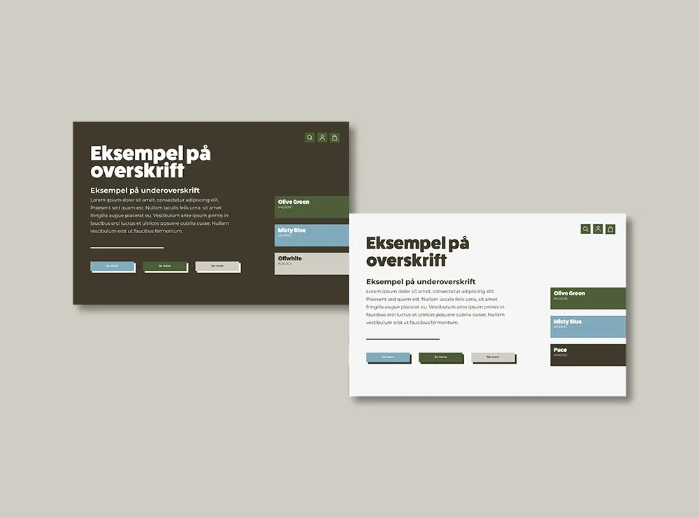
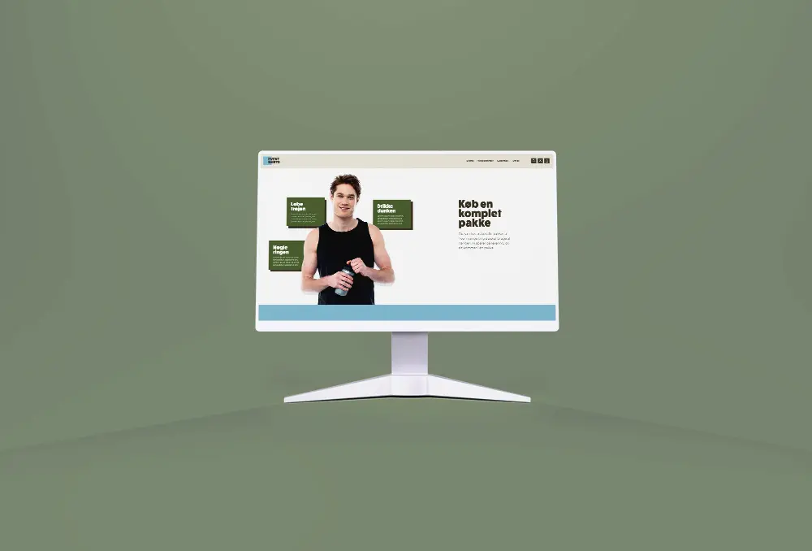
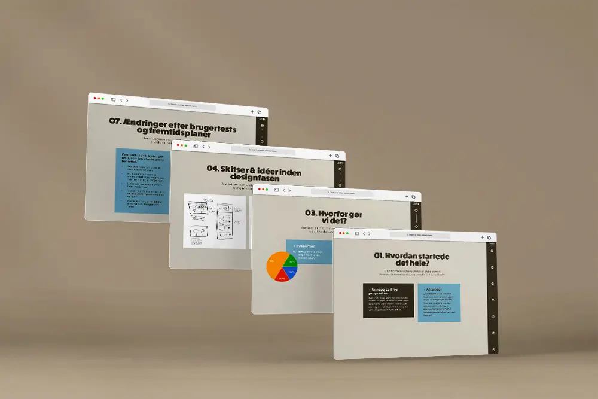

02. Grundlæggende UX
Konceptudvikling & valg af målgrupper
→ Til virksomheder
Hele dette projekt omhandlede mere omkring at designe efter en bestemt målgruppe, som man selv havde fastlagt. Der var intet kodning, og det handlede mere og selve fasen med at finde en målgruppe, konceptudvikling og udarbejde og teste prototyper.


02. Grundlæggende UX
Fastlægge styletile udfra målgruppen
→ Planlægge billedestil og styletile
Min målgruppe var virksomheder, som deltog i større aktivitetsevents/teambuilding, og som gerne vil fremstå bæredygtige og miljøbeviste.
02. Grundlæggende UX
Fremlæggelse af pitch
→ Feedback og ændringer
Her skulle vi også teste vores prototype sammen med andre studerende, og også fremlægge sitet for dem til sidst. Det gav en virkelig god feedbackprocess, som var rigtig nyttig, både fra undervisernes side, men også ens medstuderende.
